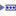

By clicking on 2 a Causal Factor can be added to one of the components.
In both of the below approaches a Causal Factor can be linked to any of the defined Unsafe Control Actions. By clicking in the Add UCA Row 3 a dialog ill be opened from which one of the available UCAs can be chosen and a new UCA entry 6 be created.
Using Scenarios
4 |
A Scenario can either be imported from the Basic Scenarios created in the XSTPA Plug-in (if installed) by clicking on or newly created by clicking on . |
5 |
A new/existing scenario is added as a collection of four cells in which the user can provide a description of the scenario and a resulting safety constraint along with some notes that can be used for example to give some hints to the context of the scenario |

Classic Approach
| 7 | By clicking the  the view can be changed to displaying one safety constraint row for all Hazards linked to the UCA 10 |
| 8 | By clicking the the view can be changed to displaying one safety constraint row for every Hazard linked to the UCA 9 |
| 9/10 | Depending on the choice made for the respective UCA row in 7/8 the one or more Safety Constraints can be defined by pressing one of: - To create a new Safety Constraint which will be added to the Safety Constraints of step 2.
A Safety Constraint can be added with a Design hint and some notes. |